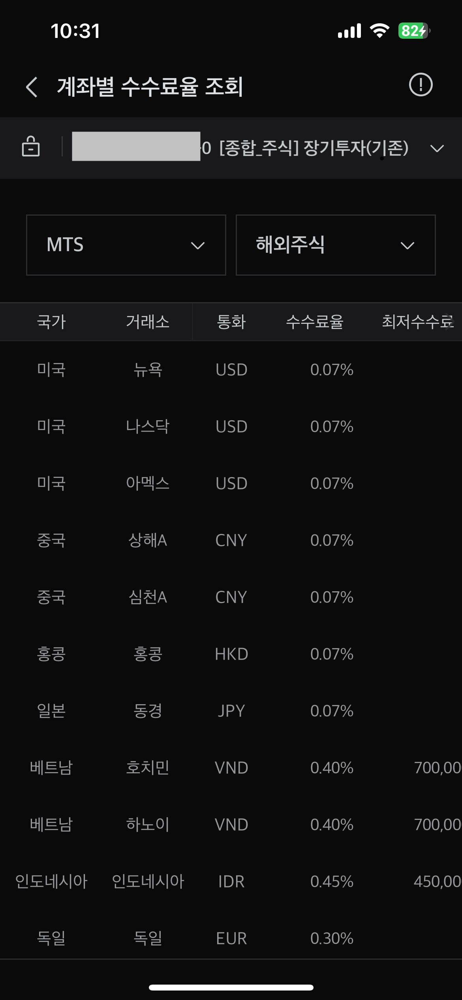

드림주스 주식스터디 · 4강
투자 전략 발표와 투자 원칙 만들기
Part 1
투자 전략 발표 & 피드백
드림주스 목표
건강한 방식의 주식 투자로 경제적 여유를 만들고,
진정 원하는 군인의 삶에 집중하게 하자.
건강한 주식 투자는 타이밍을 재지 않는다.
마켓 타이밍의 위험
시장을 이기려는 시도 중 하나가 '마켓 타이밍'입니다. 마켓 타이밍이란 시장의 상승과 하락을 예측해 적절한 시기에 매수와 매도를 하는 전략입니다. 예를 들어, 주식 시장이 곧 하락할 것 같다고 판단되면 모든 주식을 팔고, 곧 상승할 것 같다고 판단되면 다시 주식을 사는 것입니다. 하지만 이는 매우 위험한 전략입니다.
유명한 펀드 매니저인 피터 린치는 "시장의 상승기간 중 가장 좋았던 50일을 놓치면 장기 투자 수익률이 대폭 감소한다"고 말했습니다. 실제로 1990년부터 2020년까지 S&P 500 지수에 계속 투자했다면 연평균 9.96%의 수익을 얻었지만, 이 기간 중 최고의 10일을 놓쳤다면 수익률은 6.20%로 떨어집니다. 최고의 30일을 놓쳤다면 수익률은 3.04%에 불과합니다. 이는 마켓 타이밍이 얼마나 위험한 전략인지를 잘 보여…..
- <미국 주식 투자를 위한 존 보글의 인덱스 펀드 철학>
건강하고 행복한 투자의 답
‘믿음 & 간단’
나의 자산 선정 → 최소 고민과 행동
주식창 안보고도 투자할 수 있게 전략을 세워야 함.
예시)
자금의 50%를 매수
(적정기간 분할)
남은 30%를 2년 동안
매월 적립식 매수
남은 20%는 예비
투자 전략을 완성하고, 장기간 동안 투자 전략을 지키기만 하면 된다.
핵심
어떤 일이 있어도 다시 오른다고 믿고 있는가?
오르거나 내려가도 팔지 않는다.
부의 복리공식 재해석
원금 X (1+수익률) ^ 시간
원금 늘리는 것!
복리공식에서 가장 어려운것
사람들이 가장 못 하는 것
수익률 늘리는 것
= 떨어졌을 때 사면된다.
시간 늘리는 것
= 존버하면 쉽다.
내가 믿는 자산이 아니면
많이 사지 못하거나,
떨어졌을 때 더 사지 못한다.
내가 믿는 자산을 골랐으면
그대로 투자할 줄 알아야 한다.
손실이 나더라도 버틸 수 있어야 한다.
자신의 투자전략 발표
듣는 사람은 복리공식
‘원금 X (1+수익률) ^ 시간’
연계해 생각해 보세요.
Part 2
투자 원칙 만들기
은 행동하게 하고,
은 자신을 통제할 수 있게 함.
투자 원칙은 욕심과 공포를 느끼는 상황에서도
투자 전략을 유지할 수 있게 함.
나만의 건강하고 행복한 투자 10계명 (예시)
이번주 과제
참고
미국 주식 시장 거래 시간 &
해외주식 거래 수수료
미국 주식 시장 거래 시간 정리
| 구분 | 한국 시간 기준 | 영어 용어 | 특징 |
|---|---|---|---|
| 프리장 | 오후 5시 ~ 오후 10시 30분 | Pre-market | 정규장 전 거래. 거래량 적고 변동성 큼 |
| 본장 | 오후 10시 30분 ~ 다음날 오전 5시 | Regular market / Cash session | 가장 거래량 많고 신뢰도 높은 시장 |
| 애프터장 | 오전 5시 ~ 오전 9시 | After-hours / Post-market | 정규장 이후 거래. 기업 실적 발표 영향 큼 |
장별 특징
프리장 Pre-market
- 정규장 시작 전 거래 가능
- 호재/악재 뉴스 반영이 빠르게 나타남
- 유동성 낮아 슬리피지(체결 미스) 주의
본장 Regular market
- 거래량 가장 많고 기관, 펀드도 거래 참여
- 차트상 의미 있는 흐름은 대부분 본장에서 발생
- 기술적 분석과 거래 시 가장 신뢰할 수 있는 구간
애프터장 After-hours
- 정규장 종료 후 추가 거래 시간
- 실적 발표, 가이던스 이슈가 많아 깜짝 변동 자주 발생
- 거래량 적어 가격 급등락 빈번
해외주식 거래 수수료
해외주식을 사고팔 때 증권사가 받는 수수료
1. 매매 수수료 (거래금액 기준)
- 증권사마다 다름 (보통 0.07% ~ 0.25%)
- 이벤트 시 0.09% 이하 혹은 평생 0.07% 등 프로모션 많음.


2. 환전 수수료
- 환전수수료 = 기준 환율보다 비싸게 팔고 싸게 사는 스프레드(이윤구간)
예: 1달러 기준 스프레드(이윤구간)가 20원 → 100% 우대라면 이 20원을 다 깎아줌! - 모바일 앱에서 90~100% 우대 가능
- 일부 증권사는 자동 환전 설정 시 우대율 낮을 수도 있으니 직접 환전하는 게 유리
수수료 요약
1,000만 원 환전 / 환율 1,350원 / 환전 우대 95% / 수수료 0.07%
환전 수수료
10,000,000원 ÷ 1,350원/달러 ≈ 7,407달러
스프레드 20원 × (100% - 95%) = 1원/달러 → 1원 × 7,407달러 = 7,407원
거래 수수료
7,407달러 × 0.07% = 약 5.19달러 → 7,006원
수수료 합계
매수와 매도를 자주 할 수록 거래 수수료는 늘어난다.